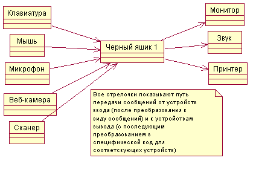
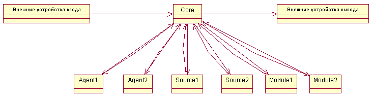
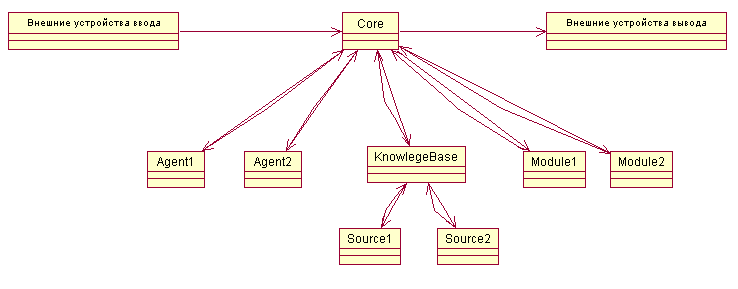
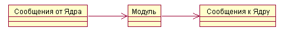
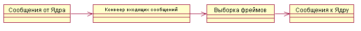
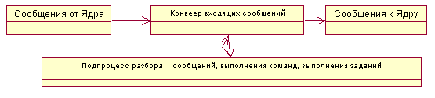

Если рассматривать ИР как черный ящик, то первоначально нужно определится что мы хотим? Т.е. какие входные данные будут поступать в ЧЯ и выходные данные будут выходить из ЧЯ. Здесь я рассматриваю создание ИР как компьютерной программы. Причем не распределенной компьютерной программы, а локальной. Возможно программа будет черпать знания от других таких же программ (либо специальных хранилищ знаний).
Рассмотрим устройства ввода и вывода данных.
Устройства ввода данных:
Выходные устройства:
Соответсвенно имеем (после преобразования):
Входные данные (рассмотрим первые 4 устроуства ввода данных):
Выходные данные (Рассмотрим первые 2 устройства вывода данных):
Черный ящик 0 можно представить в виде такой картинки:

blackbox0.rar
Все сообщения могу быть представлены в бинарном виде, в виде строки текста или в XML виде.
Углубляемся в рассмотрение структуры создания ИР.
В книге AIMA описывается метод построения систем с элементами ИИ на базе агентов. Применим это метод здесь.
Все пришедшие внешние сообщения попадают на обработку в ядро системы (Core). Из ядра сообщения пересылаются соответствующему компоненту системы.
Компоненты системы могут быть следующими:
Модуль системы может быть агентом и источником данных. Агент - это модуль, который имеет внутрениий подпроцесс выполнения. Источник данных (Источник знаний) - это модуль который предоставляет фреймы по запросу.
Черный ящик 1 можно представить в виде такой картинки:

blackbox1.rar
Для удобства работы с данными можно все источники данных объединить и перенаправить поток сообщений через объект KnowlegeBase, который обеспечит уникальность идентификаторов разных фреймов в разных источкиках знаний.

blackbox2.rar
Еще углубляемся в рассмотрение структуры создания ИР.
Каждый модуль можно представить в виде черного ящика. В общем виде модуль можно представить так:

module.rar
Источник знаний можно представить так:

source.rar
Агента можно представить так:

agent.rar
© Prof1983 2007-2010
21.04.2007 - 18.10.2010